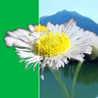

Kroma Anahtarı

Yeşil perde gibi tek bir rengi kaldırır.
Kroma anahtarı, bir rengi saydam yapar; örneğin yeşil perde. Rengi Anahtar Rengi ile seçin (varsayılan olarak yeşil). Tolerans, çevresindeki hangi renk aralığının kaldırılacağını; Yumuşaklık ise kesimin kenarının ne kadar yumuşak olacağını belirler.
- Anahtarlanan klibi göstermek istediğiniz arka planın üstüne yerleştirin.
- Kroma anahtarını ekleyin ve Anahtar Rengi'ni perdenin rengine ayarlayın.
- Perde kaybolana kadar Tolerans'ı artırın. Kişinin bazı kısımları kaybolmaya başlarsa tekrar azaltın.
- Kenarı Yumuşaklık, Tüy veya Matte Choker ile temizleyin.
Çekim yaparken perdeyi eşit şekilde aydınlatın: düz, iyi aydınlatılmış bir renk en temiz sonucu verir.
Ayarlar
| Ayar | Tür | Aralık | Varsayılan |
|---|---|---|---|
| Anahtar Rengi | Renk | – | #00FF00 |
| Tolerans | Sayı | 0 – 1 | 0.25 |
| Yumuşaklık | Sayı | 0 – 1 | 0.1 |
| Ters çevir | Açık veya kapalı | – | Kapalı |